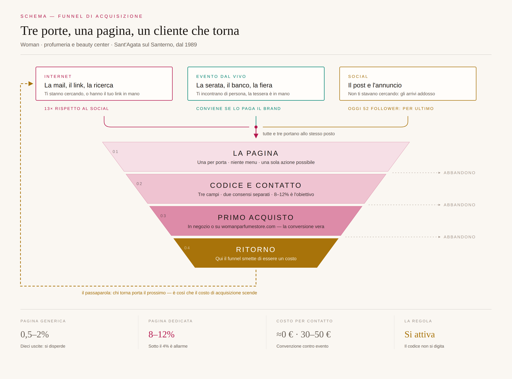

Due parti. La prima dice cosa fare, in che ordine e chi lo fa. La seconda spiega la tavola del funnel riga per riga, così puoi presentarla tu senza avere niente sottomano.
Il piano completo sta nei quattro documenti già consegnati. Qui c'è solo la sequenza: cosa si fa per primo, cosa non si può fare prima di aver chiuso una verifica, e chi tiene in mano ogni pezzo.
Nessuna di queste costa denaro. Tutte e quattro possono chiudersi in una settimana, e finché non sono chiuse ogni preventivo è un'ipotesi.
Estrarre dal gestionale quattro numeri: quante anagrafiche in totale, quante con email, quante con un acquisto documentato, quante con l'informativa privacy raccolta al momento giusto. È la cifra che decide se i cinquemila contatti sono vicini o lontani — e soprattutto chi si può contattare e chi no.
Se è spendibile solo su cose con la stessa aliquota, l'IVA si versa alla vendita; se no, al riscatto. Cambia il flusso di cassa di un trimestre e la configurazione del registratore. Domanda da fare testuale: «La nostra gift card a importo libero, spendibile su prodotti di profumeria e su servizi del centro estetico, è monouso o multiuso ai fini IVA? E cosa cambia in cassa?» Serve una risposta scritta.
Le policy sui prodotti vietati ai venditori terzi elencano buoni regalo e codici di riscatto, ma la pagina ufficiale non è stato possibile aprirla. Va chiesta conferma scritta a Seller Support. Se la risposta è no — ed è probabile — il piano B è già pronto e funziona meglio: una Beauty Box fisica con dentro il codice, che per giunta genera recensioni.
Se l'affiliazione a Ethos è attiva, esistono già una carta fedeltà e una gift card con regole proprie. Va verificato sul contratto: possiamo emettere una card nostra? può comprendere i trattamenti? possiamo venderla fuori dal circuito? Non è un dettaglio: cambia il prodotto di Natale.
Non si parte dalle aziende private: si parte dai CRAL. Hanno già la tessera, già la newsletter ai soci, già la pagina «convenzioni». Non dobbiamo costruire il veicolo di comunicazione: lo troviamo pronto.
| Chi chiamare per primo | Perché |
|---|---|
| CRAL AUSL Ravenna | Bacino grande, quasi tutto femminile, già abituato alle convenzioni |
| CRAL Comune di Ravenna | Stessa logica, e pubblica l'elenco convenzioni online |
| CRAL Start Romagna | Molti dipendenti, poche convenzioni beauty |
| Unione dei Comuni della Bassa Romagna | Qui si risponde a un avviso pubblico, non si telefona |
«Buongiorno, siamo Woman, profumeria e beauty center a Sant'Agata sul Santerno, attivi dal 1989. Vorremmo proporre una convenzione per i vostri soci: sconto dedicato su profumeria e trattamenti, nessun costo e nessuna gestione da parte vostra. Portiamo noi il materiale già pronto — locandina, testo per la newsletter, codice dedicato. Se vi fa comodo passo io in sede, sono dieci minuti.»
Il contratto al primo contatto. Allegare due pagine di clausole fa passare la pratica al legale, e lì muore. Il contratto arriva quando hanno già detto di sì.
Citare il plafond dei 1.000 €. In una convenzione a codice sconto paga il dipendente: l'azienda non eroga nulla e quel plafond non c'entra. Nominarlo apre un'obiezione fiscale che non esisteva. Serve per la gift card, che è un'altra offerta e un altro interlocutore.
Un codice unico per tutti. Risparmia dieci minuti oggi e cancella l'unico dato che conta: quale convenzione ha portato quante persone.
Le prime tre-cinque convenzioni vanno trattate come un esperimento: un codice diverso per ciascuna, una pagina diversa per ciascuna. Dopo quattro-sei settimane si sa quante persone attiva davvero una convenzione Woman.
Quel numero oggi non esiste: non è pubblicato per nessun settore in Italia. Il giorno che ce l'avete, tutte le proiezioni si ricalcolano su un dato vostro, che nessuno può contestare.
| Chi | Cosa tiene in mano |
|---|---|
| Mariagiulia | Il rapporto con i CRAL e le aziende, la selezione dei brand per gli eventi, la voce del marchio |
| Marco | Il gestionale e i numeri della rubrica, il rapporto col commercialista, il contratto di consorzio |
| Il commercialista | IVA della gift card, fatturazione alle aziende, la dicitura del 12 gennaio |
| Noi | Fascicolo, pagine, kit di lancio, tracciamento, e la lettura dei numeri ogni lunedì |
| Le due date | Perché contano |
|---|---|
| 10 novembre | Il catalogo dev'essere online prima del Black Friday: è lì che si decide una fetta grossa dei regali di Natale |
| 12 gennaio | Per il principio di cassa allargata un buono consegnato entro quella data rientra nel plafond dell'anno prima. Mentre tutti hanno chiuso la campagna il 24 dicembre, voi avete due settimane di vendita alle aziende con un argomento urgente e vero |
Questa è la figura. Sotto c'è il modo di raccontarla: cinque passaggi, nell'ordine in cui l'occhio la legge. Se li dici in quest'ordine, chi ascolta arriva da solo alla conclusione.

«Tre porte diverse, una pagina sola, e un cliente che torna e ne porta un altro. È tutto qui: la parte difficile non è farli entrare, è farli tornare.»
| Domanda | Cosa rispondere |
|---|---|
| «Da dove escono queste percentuali?» | I due numeri in fondo (0,5–2% e 10–30%) vengono da una guida di settore, non da una misura nostra: servono a dire la direzione. Il nostro numero lo daranno le prime convenzioni, con un codice ciascuna. È scritto anche in fondo alla tavola. |
| «Perché il social per ultimo? Tutti fanno il contrario.» | Perché il social è l'unico canale in cui parliamo a estranei, ed è l'unico che si paga due volte: prima l'inserzione, poi il tempo per convincerli. La rubrica del negozio e le convenzioni ci danno persone che si fidano già. Quando quelle sono finite, si accende il social. |
| «E la tessera Aurea dove sta?» | Non in questa tavola, perché oggi non esiste. Questo è il funnel di Woman, che vende davvero. I contatti raccolti adesso, con i consensi giusti, sono esattamente quelli che riempiranno Aurea quando ci sarà. Se li raccogliamo bene oggi, Aurea parte piena invece che vuota. |
Non promettere una percentuale di conversione. «Convertiremo il 10%» è una frase che si può solo perdere: se va meglio nessuno se lo ricorda, se va peggio è colpa tua. Si promette una misura, non un risultato.
Non promettere la rete Aurea a un cliente o a un'azienda convenzionata. Oggi si promette Woman: negozio, e-commerce, trattamenti. Cose che esistono e che si possono vedere.
Fagli guardare l'anello tratteggiato in basso. Tutto il resto della tavola è descrizione; quello è l'unico pezzo che spiega perché questo lavoro si ripaga invece di essere un costo che si ripete ogni mese.